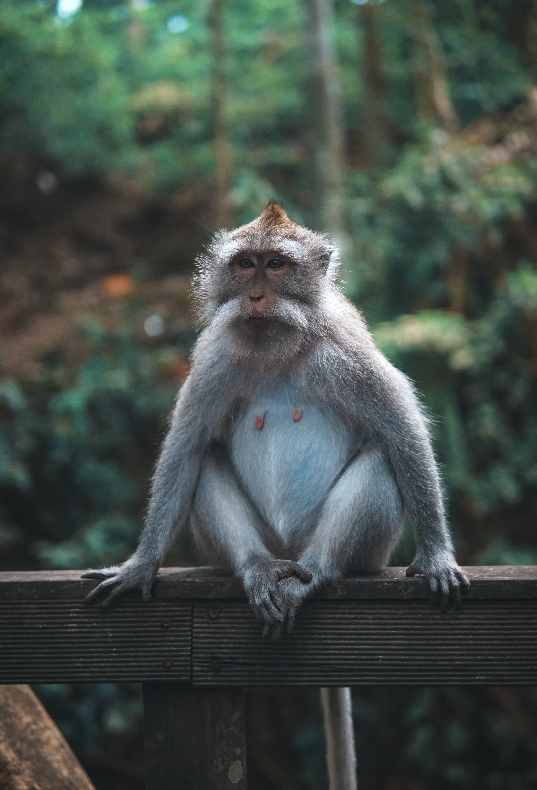

Animais Fantásticos


- 
Esquilo
Os esquilos pertencem a uma grande família de mamíferos roedores, de pequeno e médio porte, conhecida como Sciuridae.
No Brasil, são também conhecidos como serelepe, caxinguelê, caxinxe, quatimirim, quatipuru, agutipuru ou acutipuru. Na Galiza e em algumas zonas de Portugal, também são conhecido por esquio.
Este animal pode ser encontrado no mundo todo, menos na Austrália.
Raposa
As raposas são animais mamíferos e onívoros pertencentes à família Canidae. São vulpídeos de porte médio, caracterizados por um focinho comprido e uma cauda longa e peluda.
Também apresentam como particularidade suas pupilas ovais, semelhantes às pupilas verticais dos felídeos.
De cerca de 40 espécies reconhecidas como raposas, somente 12 pertencem ao gênero Vulpes das "raposas verdadeiras", do qual a raposa vermelha é a mais comum.
Urso
Os Ursos constituem uma família de mamíferos plantígrados, geralmente de grande porte, contendo os ursos e os pandas. Algumas características comuns dos ursos são pelagem espessa, rabo curto, o olfato desenvolvido e as garras não retráteis.
A maioria dos ursos costumam preparar-se para hibernar durante o inverno, comendo grandes quantidades de comida antes de entrar em uma toca para o período de sono profundo
Os ursos existem em todos os continentes, em exceção na África, embora algumas fontes afirmem terem avistado o Urso nandi, mas sem comprovarem a sua existência.
Leão
O leão é um mamífero pertencente à ordem Carnivora e família Felidae, sendo conhecido como “rei das selvas”. Ele se alimenta de outros animais, como gnus e zebras, e vive em grupos, que apresentam divisões bem marcadas, sendo o macho responsável pela defesa do grupo e a fêmea pela caça e cuidado com os filhotes.
Apesar de serem admirados por sua força, atualmente as populações de leões estão em declínio, sendo a espécie classificada como vulnerável pela IUCN (sigla em inglês para União Internacional para a Conservação da Natureza).
Os leões costumam ser divididos em subpopulações asiáticas e subpopulações africanas. Neste texto falaremos mais a respeito do leão-africano.
Macaco
Macaco é um termo de origem africana utilizado como designação comum a todas as espécies de símios ou primatas antropoides.
É aplicada restritivamente no Brasil aos cebídeos em geral. No sentido estrito, "macaco" refere-se às espécies de primatas pertencentes ao género Macaca.
Os macacos são animais importantes para o meio ambiente, atuando, por exemplo, na dispersão de espécies vegetais.